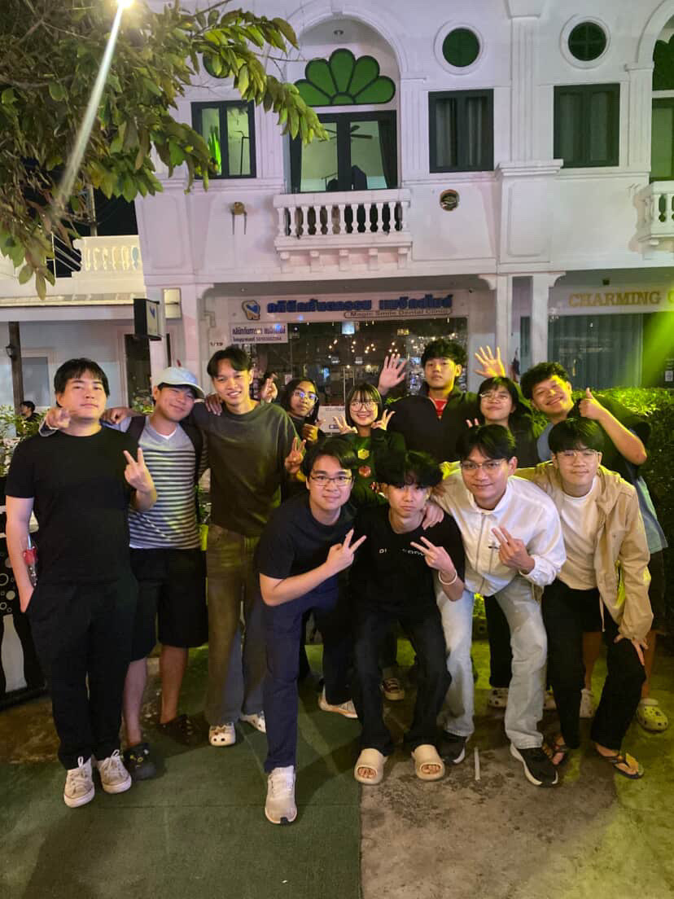
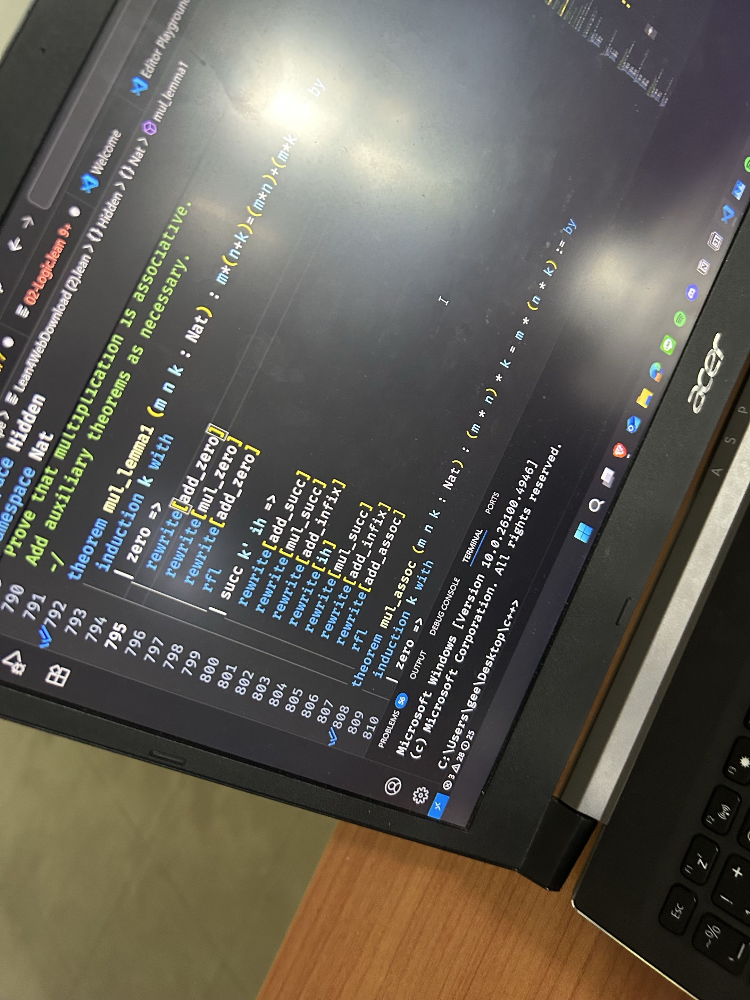
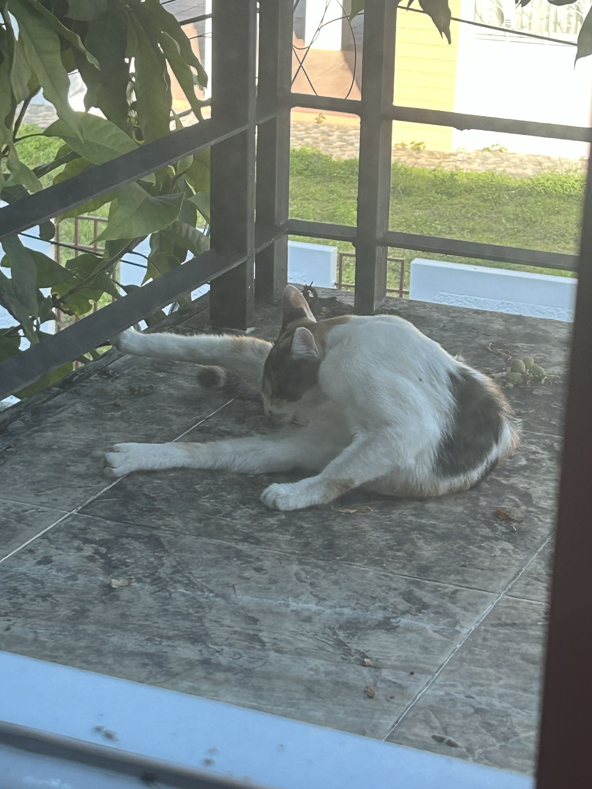
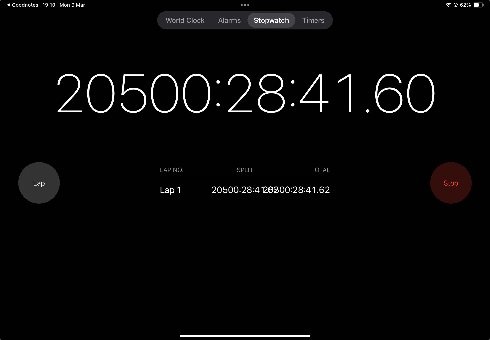

ผมไปงานกินเลี้ยงพี่ มีรุ่นปี 1-4 สายรหัสและสายใกล้เคียง ที่ร้านหน้าม. เป็นร้านที่มีราคาแพงแต่รสชาติดี (พี่รหัสจ่ายด้วย)

เป็นงานช่วง final Lean ในวิชา Discrete ที่ผมเริ่มจะเขาใจมันหลั เรียนมานานทั้งเทอม

รูปแมวจรที่เจอตอนตื่นนอน ทำให้ผมสงใสว่ามันมาได้ไง ระเบียงมันไม่มีทางขึ้นด้านนอก

มีวันนี่งผมเปิด Timer ใน Ipad แล้วมันก็มีเวลามากกว่า 20500 ชม ผมเลยถ่ายเก็บไว้จนตอนนี้มันยังผมนับอยู่